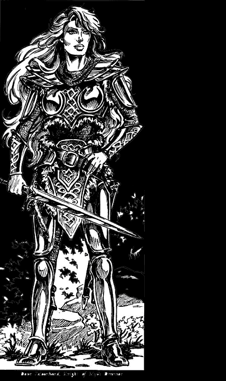
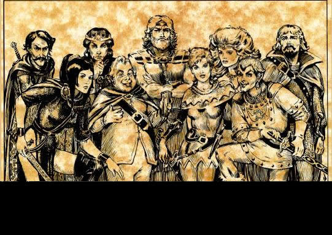

译自 The Seven Sisters TSR9475 译注参考了 Hall of Heroes TSR9252
感谢 silverharper 的帮助
多芙・鹰手
在北地，多芙?鹰手强大战力的传奇曾广为流传，那时她使用另一个名字――刃之瑞丝若（Riathra of the Blades）。作为一名竖琴手，一名最默默无闻的神秘札那（Myth Drannor）骑士（注一），现如今她虽一直低调行事，但宝刀不老。她表面沉静和蔼，可其下究竟都隐藏着什么？从下面的场景里我们可略知一二：
她的手放在楼梯柱头上――装饰的石质小龙已为她的手指及数世纪以来屋主的女儿们的手磨光，它突然扭转灰色的头发出咆哮，双眼燃烧着威吓的火焰。卓丝尔（Joysil）尖叫起来，沿楼梯向上逃回。但惊慌中她的脚跟撞在了楼梯的竖板上，不由自主地一屁股重重坐倒。
她向楼梯上回望，男巫正以缓慢但稳健的步伐向下走，他冷酷的脸上充溢着胜者的嘲笑。她被包围了。
卓丝尔回头看龙，它刚刚展开了那蝙蝠状的双翼，封住了楼梯口，现在即使冒险跳下也无法逃离。卓丝尔努力抑制住恐怖，大口喘着气向那赋予小龙生命的巫师望去。
用不了二十步，他就会抓到她。如果他柔声说出的威胁是真的话，她会永远变成楼梯柱头上的石质饰物，而龙则会再度获得恢复形体的自由，在整个依斯塔堡（Estelkeep）制造血腥的浩劫，利爪将把她的父亲，叔叔以及所有的骑士撕成碎片，身首分离。
她过于丰富的想象力为她展开了屠杀的画卷――肋骨和血液浸透的甲胄四处翻滚。突然近处传来石头崩裂时的刺耳的轰鸣，卓丝尔发出一声痛苦的呻吟，跳了起来，暂时忘记了想象中屠杀带来的不快。
卓丝尔清醒过来，难以置信的看着眼前发生的一切：小龙眼中的光芒散去，它支离破碎的头从裂开的肩上坠下，碎石四溅。
男巫发出一声怒吼，非常之近，卓丝尔颤抖着缩成一团。然而那个家伙却没有对她发动攻击，咆哮声后强力的咒语随之而来，似乎跳动在卓丝尔的耳中，撼动了脚下的地板。
闪电破空而出，沿楼梯弹下，经过瑟瑟发抖的依斯塔堡女继承人身旁，像一柄明亮的长枪刺向陌生的骑士。骑士却大步跨上楼梯，卓丝尔只见闪电在她带甲的臂间弯曲，融为耀眼的光辉，随即螺旋状沿那位女士手中的长剑下绕，消逝于空气中。
卓丝尔能听到男巫的诅咒，他的靴子慌忙地擦过石质的阶梯，向后退却。当她抬起头，她恰好看到男巫的手快速划出简单的手势，同样的咒语随之念出。
卓丝尔及时用手遮住眼睛，但仍感觉到辉煌的闪光包围了她，魔力使她的四肢感到刺痛，全身的毛发都竖立起来。
接着她听到了愉快的笑声。发自一个女子，如阳光般灿烂，愉悦，无忧无虑。接下来却像男子一样响亮而深沉。“又一束闪电，难道你们散塔林的家伙只懂这点？”
卓丝尔睁开眼，正好看到这位银发女骑士向她眨眼。
“你，你是谁？”她喘息着。
“多芙?鹰手愿为您效劳，”女士回答，跨过她，剑光闪烁。“或者先让我解决这些蹩脚学徒的魔法。”
女骑士跳上楼梯，虽然身着甲胄，却比依斯塔堡所有的骑士移动的更自如。卓丝尔再次尖叫，楼梯高处突然闪现出火光。带着恐怖的啸声，燃烧着的火球沿着楼梯向她们滚来。
多芙女士高兴的叫起来：“一个火球！该死的火球！”她将她的剑撂在一边，双臂张开，像是要去拥抱势不可挡的火焰。
致命的火球撞进骑士怀中，把她向后推了一步。当看到这位女士冷静地同火焰拥抱时卓丝尔强忍住尖叫，火焰从她的银发中无害的上升，只灼黑了她闪亮的盔甲。强力的肩膀随即猛力顶出，将旋风般缠绕燃烧的火焰丢回楼梯上。
卓丝尔惊讶的合不上口，这会轮到散塔林的巫师尖叫了。多芙冷笑着走上楼梯，捡回自己的剑，继续完成自己的工作。轻灵的走上几阶楼梯，她转过身来打量卓丝尔，银发荡出美丽的漩涡。
“如果你愿意的话，可以把龙的碎片清理干净。”她建议，“这些也许能惊醒你的父亲和叔叔们――我们可不希望有任何的失败。”
卓丝尔默默的点了点头，银发的女士轻松的在楼梯上跳动，她的笑声在身前飘荡，手中的剑闪着光芒，她离去了。
多芙是一位混乱善良的人类女子，14级游侠（注二），强壮17，敏捷16，体质13，智力18，智慧17，魅力16，生命值79。通常情况下AC为-3，她有着宽阔的肩膀，高六英尺。她常常身着男装，有时是皮裤加男式短上衣，有时则是甲胄。“谁料脆弱人儿，实为致命险峰。”一位竖琴歌手曾经这样唱诵她，但他突然发现她就在围观的人群中，他得赶快逃走。多芙却得意得长声大笑，笑声在屋内涌动，并模仿起巨人响雷般的震地脚步声，琴手的恐怖消失了。不过，还有许多竖琴手和其他人都曾看见过她揪起一个浮华子弟――也许是个马屁精或者用武力威胁她的傻瓜――的脖子，不是把他整个儿从屋子里最近的窗户中扔出去，就是抛向他同伙的刀刃。
多芙很早就满怀热情投身于冒险中，因而她也可以被看作是一位9级的法师和4级盗贼，不过由于更偏好手臂的力量，这些年她很少使用这些技能。在一个开放技能熟练度的模组中，多芙拥有盲斗，坚忍，医疗，登山，陆地骑乘（马），歌唱，游泳。今天许多诸国度的人们以为她是一名沉默寡言，精通剑术与弓术的神秘札那骑士。而竖琴手同盟的人则知道她还是一名多才多艺的歌手和竖琴师，他们还知道她一直在爱佛迷（Evermeet）抚养她的儿子――阿扎拉?鹰手（Azalar Falconhand）。阿扎拉的父亲，当然是富洛林?鹰手（Florin Falconhand），一名骑士。为了使孩子的童年生活能避开充斥着拐骗，恐怖和威吓的噩梦，他的名字和生养地一直尽量保密。
她是七姐妹中最怕羞和内向的人（虽说在一些社交性场合事情并不总是这样），多芙曾用魔法把自已伪装成swanmay（这是什么？…………）达数年。她还至少两次长时期用法术扮作男子。
她的天性公正平和，是那种能干又冷静的人，她懂得如何在拥挤的战场上保持这种冷静。她的冷静常使周围的人们难以置信。不论那些和她行为迥异的社群如深水城贵族，还是她身边的同伴们都对她感到困惑和难于理解。她能若无其事的描述伟大而危险的冒险，贵族们不能相信是真的。她能冷静的杀入最混乱血腥的战场中央，她的剑手伙伴们为之瞠目结舌。
多芙喜欢身着朴实无华的棕色或绿色皮甲到处私下游逛，观察聆听自然的生命。她可以耐心的等上好几个小时甚至数天，除了希伦（Sylune），她总是七姐妹中最有耐性的一个。有些人把她的沉静和耐心误会为“迟钝”，但她却是一个相当出色的战场指挥官（赶时髦的人们把这个叫将军），她还在地城历险的日子里解开了一些复杂陷阱和迷宫的奥妙。
七姐妹都有一个秘名，只为她们，卡尔本，伊尔明斯特，哈欧（Lhaeo）,以及某些值得信任的竖琴手所知。这些真姓名常常用于联系，守护魔法以及传递信息，这样七姐妹就能在不解去伪装的情况下识别对方。多芙的真名是安曼多娜（Amandorna）。
虽然喜爱武器胜过魔法，多芙任何时候都尽量在记忆中保留一些法术。她最喜欢的魔法包括隐形仆役，驱散术，飞行术，水下呼吸，力墙术。她还可使用所有游侠可用的神术（如同一位七级的蜜斯拉牧师），她经常准备的神术包括探测毒药，妖火，无踪步或搜寻陷阱，火焰刃或驱散术以及物品定位术。多芙坚持向蜜斯拉祈祷来更新神术，除了战斗之后，她的法术列表总是满的。
多芙时常使用以下的魔法物品：+1全身铠甲，+1幸运长剑（留有两发祈愿术），出自精灵之手的斗篷和靴子，一条抗防护及探测魔法项链，一条腰带别着两瓶额外治疗（extre-healing）药剂和两个用不锈钢小瓶装着的万能疗伤药（elixirs of health），她的箭袋里有许多点银箭，三支+3的箭和一支+4的箭。
多芙脖子上常戴着一枚由链子穿起来的拇指大天然雕刻透明绿宝石。这是一枚施有宝石传送术（gemjump）的盗匪石（roguestone）。当紧握石头并下达指令后，其上的法力可将多芙无偏传送到爱佛迷的一个幽谷中。有流言说多芙颈子后面还佩着一把隐形的带鞘匕首。
多芙的力量
就像所有的选民那样，多芙在每级奥术中都对一个拥有免疫力。这种免疫力对可造成同样效果的魔法物品也起作用，但不包括相同学派或具相同效果的其他魔法。当对她使用这些魔法时，它们无法对她造成任何影响。多芙对以下魔法免疫：魔法飞弹，灼焰法球，闪电束，艾伐黑触手，寒冰锥，防生物力场，反重力，迷宫术以及监禁术。
多芙还有一些不加记忆即可使用的额外法术。一旦施展，出于蜜斯拉的祝福，它们会在24小时后重新回到记忆中。她的奖励法术包括羽落术，浮空术，幽灵体（wraithform），变形自己，高等造物术。
多芙的盗贼能力（不考虑防具检定减值）：偷盗 20%，开锁75%，寻找/移除陷阱90%，无声移动（游侠能力）99%，隐藏（游侠能力）93%，探测噪音15%，爬墙60%，阅读语言0%。
人们对多芙的看法
如果说葵露（Qilue）在七姐妹中不为人所知，那么多芙则是被遗忘的那位。除竖琴手同盟和神秘札那骑士之外，大多数人忽视了她。当他们想起她时，“可靠”，“可信”和“一位杰出的指挥官”（这是科米尔的亚桑和凡哥达哈斯（Azoun and Vangerdahast of Cormyr）对她的评价）是常被想起的字眼。对大多数被卷入到神秘札那城中巴兹魔和塔纳利魔的冲突中的冒险者来说，她是神派来的救星，在危急时刻策马把他们从牢狱中救出。
对于爱佛迷（Evermeet）的精灵来说，多芙是一个惊喜。如果大多数人类能像她和她姐姐艾拉斯卓那样，精灵也许就不必像现在这样只在费茹一隅求生。
对诸国度的其余人们来说，多芙是一个神话，她自己似乎喜欢这样。
多芙所憎
多芙痛恨看到一切智慧生物受惊吓并被猎杀，因而巴兹魔，塔纳利魔以及一切掠夺性的野兽都是她的死敌。她心中需要消灭的恶棍名单上，驯养或煽动怪物的巫师等占有特殊的地位。她同样蔑视玛拉（Malar）的牧师团以及拜龙教，因为他们热衷于猎杀的运动（远超出对食物的需要）并经常制造麻烦。比较保险的说法是多芙痛恨那些以掠夺他人为生的残暴生命，从海盗到贩奴者，兽人部落，以及拥挤城市中的恶势力。她讨厌看到人们利用权力压迫他人，她非常乐意把那些狂妄自大的恶霸，冒险者，甚至地方贵族砍成碎片。
多芙有时骑马在北地旅行，必要时会加上魔法的伪装，去体察那些当地的老爷大人们怎么对待旅行者。这些旅行常常以一连串的死亡，燃烧的城堡，以及物件所有权的突变为标志。多芙也喜欢带一两个竖琴手或是一名自愿的法师（像伊利斯骑士 Illistyl of the Knights）去猎杀土匪。在谷区内，她经常进行这类旅行，以至于那些本就濒危的真正匪帮（相对于散塔林会雇用的亡命之徒）变成了传说。
多芙所喜
公正，警惕，慈善的事例常常给多芙以欢颜。她喜欢听到富于机智的谈吐和优美的歌唱，不过她并不太经常参与这类活动，虽然需要的时候她也能打起勇气，毕竟拥有伶俐的口舌和相当不错的嗓子。要是有机会的话，多芙倒是喜欢一次激烈的摔跤比赛。不止一次的她被看到大汗淋漓的和流氓恶棍们比试身手。不止一个到阴影谷的高大多毛的家伙在被这个高大的女人抓起狠狠扔到地上时，才意识到她远比看上去孔武有力。在这类闹剧中，她总是能以一颦一笑来享受其中的乐趣，她和从不会被对手的诡计所激怒，也不会对那些需费力较量中的失礼行为（诸如冷不丁的一个吻）斤斤计较。
不过，要是把多芙看成是一个粗笨农妇样剑手可就大错特错了，许多法师就曾经这样看，不过他们最终为之付出了代价。听了太多外人的流言蜚语，她却喜欢保持沉默不加反驳。她认为事实总是胜于雄辩的，不过她也认为，过于草率的行动（她曾经这样描绘科米尔的国王亚桑：“总是跳进来插一手而不是留事物自由发展”）常常带来的是毁坏而不是救治。她认为静观其变常常是最明智的方法，只有在当一件微小而不易察觉的举动能推动大局向更有利的方向发展时或是事态恶性发展到控制措施势在必行时才采取行动。在这点上，她和许多精灵以及森林居民的观点相同，他们比居住在城市里的人类更强调生命的自然循环。
这并不代表多芙喜爱闲散安逸的生活。她只是不喜欢把自己束缚在一些经常性的工作中去。这使她能够自由的投身于那些她认为是必需的工作中（自由，更确切的说，甚至超出抚养自己的儿子阿扎拉的需要――他现在的年龄已经能自己做出决定并为结果负责，不须遇事总找别人咨询）。因而当竖琴手同盟需要紧急征召一支临时大军时，她总是一名相当有价值的成员。她常常在午餐桌上拉起丈夫富洛林――他正与自己的儿子偶然享受一下天伦之乐――以响应妹妹风暴的召唤。阿扎拉还没喝完汤，他们就已经在前往费茹与眼魔作战（或更糟的情况）的路上。鹰手之子在访问阴影谷时，大多数时间只能和伊尔明斯特的抄写员哈欧，以及神秘札那骑士札塞尔（Jhessail）和伊力斯特（ Illistyl）待在一起。不过他一直渴望着有一天能被从饭桌上叫起，和父母并肩作战。。
多芙现在和几个卡林珊的总督，法师为敌，她认为他们是“残忍，爱管闲事，傲慢自大的傻瓜，对他人的轻蔑仅次于他们不计后果的愚行。”长久以来她与卡林珊的奴隶贩子以及魔法盗窃行为发生过多场战斗，形成了上诉观点。显而易见，许多冲突都是归咎于卡林珊的居民们对诸国度其余住民的过分关切，尤其是北地的人们 ――那些粗犷的民族缺乏权利的观念，常常遭到肆无忌惮的剥削。多芙一直监视着卡林珊鬼鬼祟祟的剥削行为。近年来她一直致力于破坏泰斯尔（Tethyr）战争所引发的奴隶贸易。她报告说大多数奴隶在乔特（Chult）的丛林为卡林珊贵族开采矿石时死亡，其余也大都难逃悲惨死于魔法实验中的命运――卡林珊的大法师用来寻求长生不老之法或是更强力的毁灭法术。
多芙警告说至少还有一名在逃法师成功的发明了一种将人类转变为蔓生怪的法术。某些暗黑社团，如“斗篷会”（金牙斗篷会，三泪斗篷会等等）正在卡林珊崛起，在东北以及蒸汽湖（Lake of Steam）畔的各城邦散布黑暗之网。多芙甚至在西门附近遇到一些斗篷会的活动。多芙还观察到一个穆罕兰德帝国（Mulhorand）的法师，正计划建造一系列连接诸国度各处的短期传送门。这个无情的法师相信这些传送门可以用于传送恐怖的部下，展开对诸国度的掠夺。多芙现在还没有开始追踪这个法师，将其交给竖琴手同盟代理，但一旦她经手此事……
比起她的姐妹们，多芙仍喜欢用近乎孩子气的方法为众人做出公正的裁决，让善人受益，恶人偿还恶行，给大伙以适当的酬劳。长久以来，她介入纷争，以使众神之手运转，把尖锐中肯的正义甜点正确的分发给那些她所面对的人们。一个在晚间开凿邻里的牛圈让牲畜逃离的人会发现他的作案工具从床边被偷走并以彼之道还施己身。一个从他人那里偷窃卷轴的法师会发现相同的卷轴被偷走而最初的受害者却会从门缝下发现它。一个在伪币上做记号以便自己识别的奸商第二天会发现那枚伪币再次回到手中。这些事常带给多芙欢乐，她会觉得蜜斯拉赐予她神力的时间没有白费，尽管她对大多数魔法并不精通（应该指出的是，蜜斯拉同意她的想法）。
起居注
多芙希望看到精灵们能都重返北地，实现艾拉斯卓的梦――有一天人类与类人种族能够在银月城以及其他地方和平繁荣的生活在一起。在策马巡游神秘札那之余，多芙经常自愿帮助精灵传递消息（以及有价值的物品），穿过那些精灵不敢去的城市。她相当欣赏大多数精灵与自然融洽生活的态度，她希望精灵有一天能恢复力量重回王廷。如果亚桑和他的继承人将科米尔的势力扩张到提尔佛顿（Tilverton）之外，她认为这一天总会到来，她打算要求他在边境上建立并保护一块属于精灵的版图。这样一块土地不仅可以给现存的精灵们提供一块生存空间，它还作为一块科米尔,接壤的谷地以及桑比亚（Sembia）（预防将来科米尔的过渡膨胀）之间的缓冲。她坚信她能迫使一位紫龙王座上的不太情愿的君主完成这一计划，最多向竖琴手同盟以及她的同伴神秘札那骑士寻求一点帮助。她唯一的问题需要同拥有强大魔力的科米尔的战斗法师协商――她很钦佩他们的组织纪律。
多芙私下还认为费茹中太多掌控魔力的生命为魔力所引诱堕落。他们开始认为自己非同寻常，似乎以法术伤害他人是一种特权。因而，多芙对于那些想用魔力击败她的家伙毫不留情。她曾经说过“不把脑袋从肩膀上揪下来，法师脑子里的想法就没法进步。”
很久以前她开始从法师的名单中选出残忍的暴徒，每当她杀死一名法师，阿祖斯都托梦于她，指示多芙向一个大眼睛的年轻人传授魔法。多芙对梦境的意义一点也不含糊，每次她取走一名法师的性命时――甚至不考虑是男是女――这种梦境都会重现，直到她找到一个梦中所示的年轻人。多芙传授给这群神示的年轻人一些魔法，指导他们使用直至掌握。
有些时候，她会在数年之后回头调察那些由她引导上魔法之路的人们。她发现有些人开始变的残暴，可能的话，她会以严厉的教导使他们迷途知返而不是当即将他们送上绝路。多数情形下，她发现那些人苦苦在所知有限的魔法中探求，因自己滥用力量而痛苦，无力去发现新的魔法，缺少前辈的监护指导。对这些人，她常指点明路或传授一两个魔法来帮助他们继续向前。她的努力已被编成歌谣“漫游的女巫”，并且――自然是扭曲了不少――在半打费茹的国度中变成了“绿衫女士”的地方传说，讲一个神奇的生物和人们――像她帮助别人那样――经常开玩笑。诸国度许多魔法师甚至将她当做神所派来的朋友。
在旅行中，多芙经常身着翠绿色束腰外衣，丝织衬衫。当夜幕的降临使得她穿越茂密林木的旅程变得危险时，她喜欢在树上休息。如果她在多岩石或沼泽这类险恶地区旅行时，她会召换一个加长时间的浮碟，然后什么也不垫，高高在上，懒洋洋躺着，俯视着下面的世界。这些古怪的姿态不能不为下里巴人提供些许素材，编造出有关她的狂野传说。
能持有一把精致的附魔剑的感觉总使多芙兴奋得发抖。这些年以来她收集使用了超过两打魔法剑。她的收藏中值得一提的是一把能使持用者飞行的剑，当她与富洛林――未来的丈夫，并肩作战之时佩过这把剑。
她对宝剑的热情没有逃过某些敌人的注意。她曾经在一把剑中被禁锢了好几年――一个疯狂的哈鲁那（Halruaa）法师为她设下的陷阱。她惩罚了他，把他诱到一个地方，由她的一个精灵朋友施法将她和哈鲁那法师的本体互换。这回他身陷于剑中，多芙把剑放进熔炉之中，用锤打成了一根钝金属棒。
多芙在阴影谷中的竖琴手山附近还有三处藏剑之所。但她最为强力的武器已经赠与了黎明之厅，给穷困的竖琴手使用，或让隐士居（Herald’s Holdfast）收藏直到情况紧急需要它们再度现世为止。多芙手头的一处藏宝所据知藏有一把+1幸运长剑，一把+2阔剑，剑柄上镶有一枚光亮宝石，另外还有四把投掷用匕首。
有些剑多芙是从一些龙处得到。不过她并不用去屠龙，她还和两条龙建立了友谊：奥瑟欧格拉玛（Othauglarmar），一条老年雄性黄铜龙，住在蛛林北边的大漠之口山脉（Desertsmouth Mountains north of Spiderhaunt Wood）。拜赫史玛（Behrshimmer），一条古老的雌性绿宝石龙，巢穴建在雪湖畔的奔跑巨人山（Giantís Run Mountains above the Lake of Snows）。
拜赫史玛是一条懒惰的龙，不过，为了了为多芙和所有以多芙之名来找她的人提供庇所，她总得挪一挪。她还为这些人提供保护以免为他人找到，条件只要客人待在她的窝里，当然，还不得偷窃她的藏品。
奥瑟欧格拉玛则是一条精力充沛，热爱冒险的龙。他常离开家在费茹上空做观光飞行，或者如他所说，“捕猎之旅”。（他喜欢低空掠过夏亚（Shaar）的草原，猎食各种各样蹄类动物。夏亚是一个饥饿的龙进餐的好地方，他强调道。）他还喜欢用自己的魔法观看人类的行动。因而，常人很难到达他筑在山顶上的秘密居所。他大约每隔一天观察多芙的活动，饶有兴趣地以隐形之眼经多芙肩上的角度观望：摔跤，猎捕强盗，沐着阴影谷的皎洁月光，在愉快的晚间游戏中和她的丈夫互相追逐。如果多芙被监禁或身处险境，这条黄铜龙倾向于展开双翼，迅速飞跃诸国度去帮助她。作为回报，多芙让奥瑟欧格拉玛挑选喜欢的财宝，有时还和他呆在一起聊上好几天。
最近在爱佛迷居住的日子里，虽然那里的人们厌恶离开他们的岛国去冒险，但多芙还是交了不少朋友。有时他们用魔法同多芙联诺，请求她帮助北地的精灵。这类工作常包括拯救或是引导那些希望到达能够传送他们到爱佛迷的一座传送门或是阿吉普森林（Ardeepforest）。（在阿吉普森林，竖琴手们会把他们带到卡尔本?奥罗桑――“黑杖”那里，以便他将他们经由黑杖塔中的密门送往爱佛迷。如果精灵人数太多或者携带大量物品，卡尔本会把他们秘密送上深水城航向明檀（Mintarn）的船只，那里一条精灵的船只会接应他们。）
多芙在爱佛迷（Evermeet）认识很多精灵，但经常与她联络的有萨伊利恩?夜星（Saèlihn Nightstar） 和欧姆伯瑞恩?埃拉埃尔达（Ohmbryn Elaèyadar）。萨伊利恩，一位年富力强的月精灵，夜星家族的头人，住在琉西帕（Leuthilspar）城里的夜星之家。她用魔法送出飞舞的闪闪发亮的，有意志的纤细的小光球，和多芙交谈。（小球可以听到多芙以及她周围60尺以内的声音，它同样可以看到周遭同样距离内的事物。它唯一的攻击方式是冲向敌人（移动速度21，A），自毁并放出电流，造成4d4的伤害。）
欧姆伯瑞恩?埃拉埃尔达住在塔尔泰姆普拉（Taltempla）。他是一个年老易怒的精灵，却是一位人类行为专家――像埃佛迷所拥有的专家（或将要拥有的）。他的法术只在多芙心中现出声音。她不需要大声便能回答他。通过这种联系，欧姆伯瑞恩可以施展治疗魔法（影响多芙或是通过她的触摸治疗他人）或是毁灭性的力量（这种破坏力造成一场发自多芙身体的能量爆发，这种力量不会伤害多芙，但会给20尺内的所有生命存在都造成5d4的伤害。每个生命存在都必须进行一次成功的对抗法术的豁免鉴定，否则身体将会被抛出杀伤区域。当着陆时，还会造成1d2的伤害，他们携带的所有易碎物品同样必须进行一次成功的对抗撞击的鉴定，否则便会损毁。）
欧姆伯瑞恩只在多芙身处绝境时伸出援手，但他的粗暴简略的风格却掩盖了一件事实：他对这位不遗余力帮助他子民的蜜斯拉选民有着特殊关切。从她以刃之瑞丝若的名字初出茅庐开始，欧姆伯瑞恩便远远看护着她（那时他选择她为精灵的合适代理人）。他不止一次默默警告她变节的行为，或是以一种出现在虚空中，冷淡而讽刺的声音，阻挡一个过于多情的求婚者或是其他骚扰多芙的人们。沉静的的女子尽力去回报这一友谊，不过，据知有时她也会冷冰冰地提出意见，要欧姆伯瑞恩停止他的监视（常常是在她和丈夫富洛林独处的时候）
译注：
1 神秘扎诺骑士：领导为富洛林?鹰手，起初只是一个普通的冒险者小队，在科米尔国王亚桑的授意下成立，于竖琴之年(DR1355)开始冒险。活动于阴影谷附近。与散塔林会的战斗为他们在阴影谷建立了良好的声誉，以至于当卡尔本在选定阴影谷统治者时，将这个位子交给了富洛林的小队（小队中先后有数人担任此职，直至今天）。于王子之年(DR1357)，这个冒险团体去了失落的城市，神秘扎那。在那里，他们同黑暗精灵作战，寻找宝藏（比如说卡尔本塔中的传送门），他们也确定了自己小队的称号，神秘扎那骑士，并打算在这里建立永久性的基地。
富洛林是一位7级游侠，一位退休的科米尔军官之子，善于领导。在遇到多芙之前，他曾经与一位神秘扎那骑士发生恋情，但后来她在阴影谷死于虎人之手。梅莉凯女神相当眷顾这位游侠，曾七次现身于他面前，其中一次指示他娶多芙为妻。婚礼于1356年举行。
2 在frcs中，多芙是一位14级游侠/9级术士/4级游荡者/1级竖琴手斥候。
附图：神秘扎那骑士

